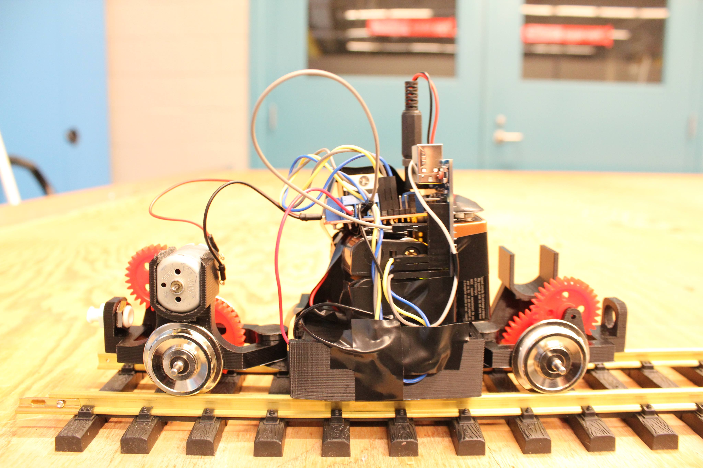

I have a foundation in mechanical design and hands-on system integration, particularly for biomedical
automation. My work spans firmware, hardware interfaces, and digital tools, but it always starts with
understanding how physical systems work and fit together.
I focus on creating systems that are
comprehensive and intuitive. I believe the best solutions are the ones you don't notice, because they
just work.
Smart Ecosystem ↗
Freelance Math/Engineering Expert
|
Remote
Provided technical guidance to improve the quality of AI-generated content in
engineering and mathematics. I focused on crafting prompts that could stump the model,
then reviewing and refining its responses to ensure accuracy, clarity, and depth.
International Travel ↗
Traveled and climbed through Europe and Southeast Asia, volunteering on farms and
connecting with people from everywhere. Along the way, I built a Unity-based RPG to
sharpen my skills in system architecture and game design.
STEMCELL Technologies ↗
Associate Mechanical Engineer
|
Vancouver, BC
Designed and tested instruments and consumables for lab automation, focusing on
mechanical design and embedded systems. I led development of automated manufacturing and
testing equipment, and co-invented a patented fluid control device. The role bridged
disciplines and carried projects from concept to production.
Embedded C
I/O Devices
C++
SolidWorks
Design Of Experiments
STEMCELL Technologies ↗
Instrumentation Co-op
|
Vancouver, BC
Supported prototyping and testing across the R&D team, focusing on mechanical design and
hands-on builds for laboratory automation. I created wiring harness
drawings, assembled systems, and helped
troubleshoot early prototypes.
Electronics
Machined Parts Design
3D-Printing
Philips Lighting ↗
Continuous Improvement Co-op
|
Langley, BC
Built tools and equipment for teams across the factory—from custom process machines to
factory flow and safety systems. I created an employee database in Microsoft Access with
SQL, automated document creation with VBA, and helped connect engineering with
day-to-day operations.
SQL
VBA
Lean Manufacturing
StraightLine Bicycles ↗
Bike Mechanic
|
Fernie, BC
Fixed bikes—mostly mountain. Rebuilt brakes, tuned suspension, swapped drivetrains. Got
good at diagnosing tricky issues quickly and making sure nothing fell apart on the
trail.
fishBLITZ Unity Game ↗ - Ongoing
I'm building a top-down role-playing game from scratch in Unity, designing everything from
gameplay systems to art. My focus is on exploring system architecture patterns to sharpen my
high-level programming skills. Along the way, I'm deepening my understanding of the Unity
API, writing custom shaders, and creating original art assets to bring the game to life.
CHIP-8 Emulator ↗ - 2024
I built a CHIP-8 emulator, a classic starter project for learning how emulators work. The
toughest part wasn't decoding opcodes, it was wrangling SDL to handle graphics and input
properly.
Capstone for Zaber Technologies ↗ - 2021
My capstone team and I partnered with Zaber Technologies to improve the resolution and
reliability of their interferometer system. By analyzing environmental effects and designing
a physical datum, we reduced noise and improved measurement stability at the nanometer
scale.
Rocket Barge - 2019
In a mechanical engineering course, we designed a barge to transport a rocket, similar to
those used by SpaceX. Our design didn't have the fastest hull shape, but it could maneuver
quickly without tipping the rocket. It was a fun challenge that blended hands-on design with
principles of buoyancy and control.
Balance
Material Selection
Vessel Design

Rail Rider - 2019
In a mechanical design course, we built a train to run an obstacle course. Ours was wildly
overpowered for how little grip it had, so it sped around the track in a near-constant
burnout.
Engineering Design Cycle
Prototyping
Jewellery Tree - 2019
I designed, 3D printed, and hand painted a custom jewelry tree for my partner, combining
practical design with a personal touch.
3D Printing
Mechanical Design
Signify Projects - 2018
I completed an engineering co-op at Signify (formerly Philip's Lighting), where I focused on
continuous improvement for the factory floor. I designed and built a variety of tools and
systems to support production and streamline workflows. Linked below are a few examples of
the solutions I created.
Sheet Metal Design
Lean Manufacturing
Claw - 2017
My design team built a remote-operated claw to pick up a range of small household
objects—cans,
cloths, rulers, pencils, and more. It was suspended on the end of a long cord and used sonar
to
trigger actuation. The final design was incredibly reliable, and I was proud of how well it
performed.